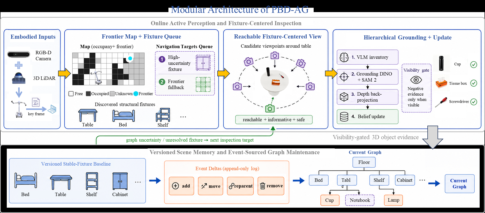
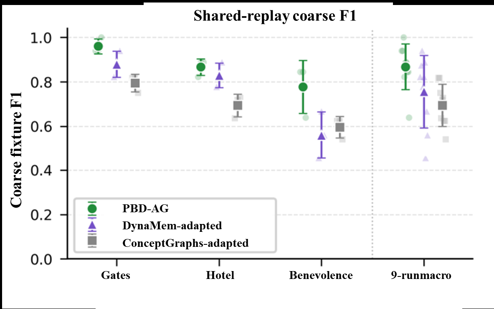
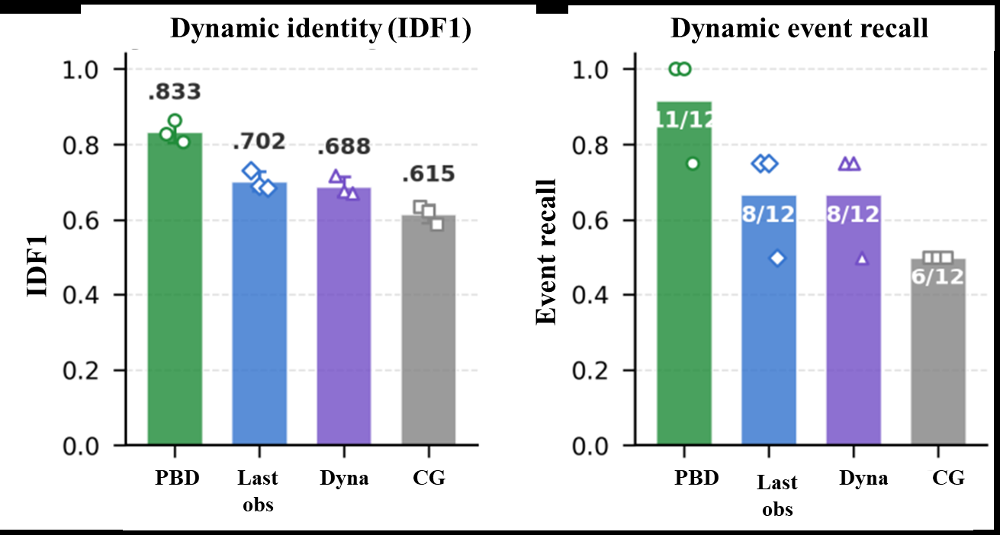

Bootstrap
Explore an unknown environment and discover stable structural fixtures.
Preprint · Under Review
Long-horizon service robots require persistent world models that can be built autonomously in unseen environments and revised as task-relevant objects change. Existing methods rely on online mapping, which accumulates localization and observation errors, static scene representations that cannot capture persistent object changes, or holistic vision-language predictions that lack verifiable 3D geometric evidence. We present PBD-AG, a persistent baseline-delta active graph framework that decouples robot-verified stable fixtures from revisable dynamic object events. The robot autonomously bootstraps the structural baseline from onboard exploration and inspects discovered fixtures to ground hierarchical object beliefs. PBD-AG maintains reliability-weighted object states over geometry, semantics, identity, existence, and support relations, using a geometric visibility gate to mitigate false deletions under occlusion. Inspection viewpoints are selected by a graph-conditioned policy that balances target coverage, travel cost, collision risk, and redundant observation. Simulation experiments in multiple environments and under controlled dynamic evaluation show higher aggregate coarse-fixture F1 than capability-matched controls, as well as stronger identity continuity and event recall. A qualitative physical-robot demonstration further illustrates integration with onboard sensing, providing a traceable world model for long-horizon robotic perception.
Core idea. Keep a verified structural baseline, record dynamic changes as event deltas, and only treat a missed detection as negative evidence when the object should have been visible.
Method
PBD-AG connects online exploration, fixture-centered inspection, hierarchical grounding, and persistent graph maintenance in one auditable loop.

Explore an unknown environment and discover stable structural fixtures.
Select reachable and informative fixture-centered viewpoints.
Build hierarchical object beliefs from close-range RGB-D evidence.
Append add, move, reparent, and remove events to persistent memory.
Uncertainty-aware inspection
The visibility gate rejects negative evidence when a predicted object lies outside the view frustum, is occluded, or has insufficient expected pixel support. When more evidence is needed, the robot selects only reachable, informative, and safe viewpoints.

Results
PBD-AG improves structural reconstruction and preserves dynamic object identity while reducing false absence updates.


Demonstrations
The same persistent memory abstraction supports autonomous mapping, inspection, and object-state revision across both settings.
Physical deployment

@article{bao2026pbd_ag,
title = {PBD-AG: Persistent Baseline-Delta Active Graphs with
Uncertainty-Aware Inspection for Long-Horizon Service Robots},
author = {Bao, Shuo and Dong, Wei and Zhang, Shuyue and Shang, Ming and
Huang, Yuchen and Yu, Han and Xu, Chengjie and Bi, Yiheng and
Sun, Kai and Sun, Fuchun and Wang, Xinzhou},
year = {2026},
journal = {Preprint, under review}
}